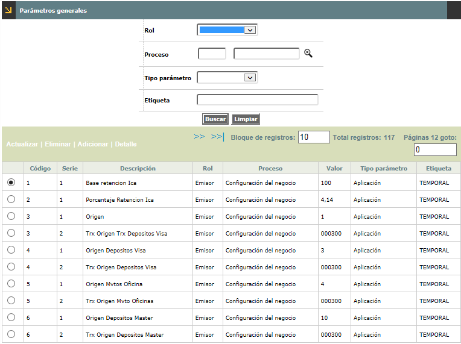
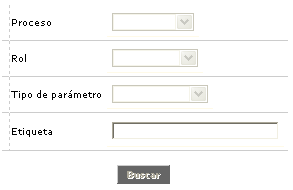
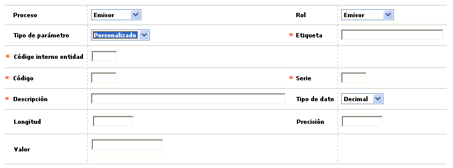
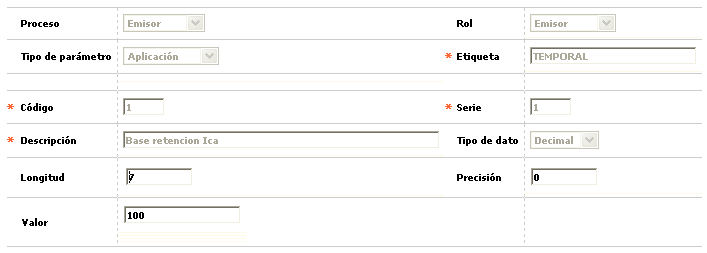
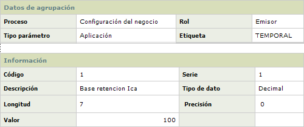

Parámetros generales |
Esta pantalla permite tanto la consulta como el mantenimiento, a los funcionarios de Open Card S.A., de la tabla que contiene la definición, por módulos, de aquellas variables o parámetros genéricos requeridos por algunos procesos asociados o relacionados con cada uno de dichos módulos. La funcionalidad provista por esta opción, pretende, de un lado evitar el mayor crecimiento de la tabla NU_PARÁMETROS_OPERATIVOS, y del otro optimizar la organización de algunos parámetros al concentrarlos por cada uno de los módulos del sistema. La parametrización aquí relacionada es independiente a la requerida por la automatización de procesos. Dado que esta opción de menú corresponde al grupo de Tablas reservadas del Núcleo, la cuales son altamente restrictivas, mediante la opción Parámetros operativos se provee el acceso para el usuario final, del campo Valor que es esencial para éste. La funcionalidad ofrecida se relaciona entre otras, con las variables o parámetros de transacciones originales y orígenes de transacciones que afecten los depósitos a establecimientos, lo que para algunas entidades corresponde a Cuenta nacional.

El formulario contiene las opciones Actualizar, Eliminar, Adicionar y Detalle. Adicionalmente tiene un filtro de búsqueda.

Proceso |
Este campo posee lista de valores con las opciones Emisor, Captura, y Más de uno. |
Rol |
Este campo posee lista de valores con las opciones Emisor, Adquirente, Débito , y Más de uno. |
Tipo de parámetro |
Despliega las diferentes clases o tipos de parámetros definidos para cada uno de los módulos parametrizados. Al cambiar de tipo de parámetro, si hay más de uno, se despliegan los parámetros correspondientes a cada uno de ellos. |
Etiqueta |
Campo alfanumérico de 30 campos. |
Adicionar: Si el usuario invoca la opción Adicionar se despliega un formulario con los siguientes campos:

Proceso |
Este campo posee lista de valores con las opciones Emisor, Captura, y Más de uno. |
Rol |
Este campo posee lista de valores con las opciones Emisor, Adquirente, Débito , y Más de uno. |
Tipo de parámetro |
Despliega las diferentes clases o tipos de parámetros definidos para cada uno de los módulos parametrizados. Al cambiar de tipo de parámetro, si hay más de uno, se despliegan los parámetros correspondientes a cada uno de ellos. |
Etiqueta |
El campo Etiqueta admite cualquier dato alfanumérico de máximo 30 caracteres. Permite mayúsculas y minúsculas |
Código interno entidad |
El campo código interno de la entidad, solo debe habilitarse y volverse obligatorio cuando el actor en el campo Tipo parámetro, selecciona Personalizado, de lo contrario no debe permitir ser diligenciado |
Código |
Campo numérico de cuatro dígitos, en el cual si el usuario no digita valor alguno, el sistema asigna el entero inmediatamente siguiente al mayor de los registrados con anterioridad, y que permite diferenciar cada variable o parámetro por módulo del sistema. El dato aquí registrado junto con el del campo serie constituyen la llave de esta tabla, razón por la cual cada módulo debe disponer de un rango propio u otra manera que facilite el no cruce o tentativa de repetición de valores, situación que tampoco es permitida por la forma. |
Serie |
En este campo numérico de cuatro dígitos, por defecto el sistema le asigna el número uno (1), aunque el usuario puede digitar un valor distinto; permite un uso compuesto del mismo parámetro, por ejemplo si el parámetro corresponde a transacciones, la secuencia menor puede corresponder al origen mientras que la mayor puede diferenciar cada transacción original. |
Descripción |
Despliega el nombre o breve descriptivo de cada parámetro. Admite cualquier dato alfanumérico de máximo 60 caracteres. Permite mayúsculas y minúsculas. |
Tipo de dato |
Este campo muestra un combo con las opciones Fecha, Decimal, Entero, y caracter. Los campos que siguen se habilitan de acuerdo a la opción seleccionada en este campo así: La opción Fecha habilita el campo Valor. La opción 'Decimal' habilita los campos Longitud, Presición y Valor. La opción 'Entero' habilita los campos Longitud y Valor. La opción 'Caracter' habilita los campos Longitud y Valor. |
Longitud |
El campo Longitud admite cualquier dato numérico de máximo 3 dígitos sin decimales. |
Presición |
El campo Precisión solo se habilita para ser diligenciado cuando el actor en el campo Tipo dato selecciona Decimal, de lo contrario no debe permitir ser diligenciado. Admite cualquier dato numérico de máximo 2 dígitos sin decimales |
Valor |
Único campo de la pantalla que le permite al usuario modificar su contenido, en el debe registrarse el nuevo dato o valor correspondiente a cada variable o parámetro. |
Actualizar: Si el usuario invoca la opción Actualizar se despliega un nuevo formulario en el cual los únicos campos modificables son: Longitud, Presición y Valor.

Detalle: Si el usuario invoca
la opción Detalle se despliega el siguiente formulario:
